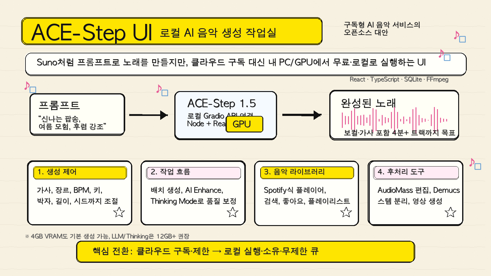

Suno나 Udio가 AI 음악 생성 시장을 꽤 빠르게 대중화했음. 프롬프트 몇 줄만 넣으면 보컬까지 붙은 노래가 나오니까, 음악을 몰라도 결과물을 뽑는 경험 자체가 완전히 달라졌음.
근데 한 가지 불편함이 계속 남음. 구독료, 생성 제한, 클라우드 업로드, 결과물 소유권, 세부 제어 문제임. 많이 만들수록 비용이 붙고, 내 작업 흐름이 서비스 정책 안에 묶임.
ACE-Step UI는 이 지점을 정면으로 건드리는 프로젝트임. 한 줄로 말하면 ACE-Step 1.5라는 오픈소스 음악 생성 모델을 Suno처럼 쓰게 해주는 로컬 UI임.

1. 본체는 ACE-Step 1.5, ACE-Step UI는 작업실
ACE-Step UI 자체가 음악 생성 모델은 아님. 음악을 실제로 만드는 엔진은 ACE-Step 1.5이고, ACE-Step UI는 그 모델을 쓰기 좋게 감싼 인터페이스임.
구조는 단순함.
- ACE-Step 1.5를 로컬에서 Gradio API로 띄움.
- ACE-Step UI가 그 API에 연결됨.
- 브라우저에서 프롬프트, 가사, 장르, BPM, 키, 길이 등을 넣음.
- 결과 음악을 라이브러리에서 듣고 관리함.
즉, 모델을 터미널 명령어로만 만지는 게 아니라, 음악 제작 앱처럼 다루게 해주는 껍데기임. README는 스스로를 “The Ultimate Open Source Suno Alternative”라고 소개함.
2. 왜 Suno 대안이라고 부르는가
핵심 비교는 비용보다 통제권에 가까움.
| 항목 | Suno / Udio류 서비스 | ACE-Step UI |
|---|---|---|
| 실행 위치 | 클라우드 | 내 PC / 로컬 GPU |
| 비용 구조 | 월 구독 또는 크레딧 | 무료 오픈소스 기반 |
| 생성 제한 | 서비스 정책에 따름 | 내 하드웨어 한도에 따름 |
| 데이터 | 외부 서비스로 전송 | 로컬 중심 |
| 커스터마이징 | 제한적 | 파라미터 직접 조절 |
| 작업물 관리 | 서비스 내부 라이브러리 | 로컬 DB와 파일 기반 |
중요한 건 “무료로 Suno를 복제했다”가 아님. 상용 서비스의 편의성을 오픈소스 모델 위에 얹어서, 내 컴퓨터에서 반복 실험할 수 있게 만든 점이 큼.
AI 음악을 교육용으로 써도 이 차이가 큼. 학생들이 프롬프트를 바꾸고, BPM을 바꾸고, 가사 구조를 바꾸면서 결과가 어떻게 달라지는지 실험하려면 생성 횟수 제한이 적을수록 좋음. 로컬 실행은 이런 탐구형 수업과 잘 맞음.
3. 음악 생성 기능은 꽤 본격적임
ACE-Step UI가 제공하는 기능은 단순한 “프롬프트 입력창” 수준이 아님.
주요 생성 기능은 다음과 같음.
- 보컬이 포함된 전체 곡 생성
- 인스트루멘털 모드
- 가사 직접 입력 및 구조 태그 작성
- 장르, 분위기, 악기, 템포 태그 지정
- BPM, 키, 박자, 길이 조절
- 시드 고정으로 결과 재현
- 여러 버전 배치 생성
- 기존 오디오를 참고하는 Reference Audio
- 기존 오디오를 다른 스타일로 바꾸는 Audio Cover
- 특정 구간을 다시 만드는 Repainting
특히 Custom Mode가 중요함. 그냥 “신나는 팝송 만들어줘”에서 끝나는 게 아니라, [Verse], [Chorus] 같은 구조 태그를 넣고, BPM과 키까지 직접 잡을 수 있음. 음악 이론을 아주 깊게 몰라도 “변수 바꾸기 실험”이 가능해짐.
4. AI Enhance와 Thinking Mode
README에서 눈에 띄는 기능이 두 개 있음. AI Enhance와 Thinking Mode임.
AI Enhance는 사용자가 넣은 짧은 장르 태그를 더 자세한 음악 설명으로 확장해주는 기능임. 예를 들어 pop, rock 정도만 넣으면 결과가 밋밋해질 수 있는데, AI Enhance를 켜면 BPM, 키, 박자, 분위기 같은 정보를 더 풍부하게 만들어 모델에 넘기는 식임.
Thinking Mode는 한 단계 더 나아가 LLM이 곡 구조를 더 깊게 추론하고 오디오 코드 생성까지 관여하는 모드로 소개됨. 대신 느리고, 하드웨어 요구사항도 올라감.
정리하면 이렇다.
| 모드 | 역할 | 특징 |
|---|---|---|
| AI Enhance OFF | 입력 태그를 거의 그대로 전달 | 빠름 |
| AI Enhance ON | 장르·분위기 태그를 상세 캡션으로 확장 | 장르 정확도 개선 기대 |
| Thinking Mode | LLM 기반 구조 추론 강화 | 느리지만 품질 지향 |
여기서 조심할 점도 있음. 로컬 AI는 공짜 마법이 아니라 하드웨어를 씀. README 기준으로 기본 생성은 4GB 이상 VRAM에서도 가능하다고 안내하지만, LLM 기능까지 편하게 쓰려면 12GB 이상 GPU를 권장함.
5. UI는 음악 앱에 가깝다
ACE-Step UI가 흥미로운 이유는 모델 실행 도구에 머물지 않는다는 점임. README는 Spotify식 인터페이스를 강조함.
제공 기능은 다음과 같음.
- 하단 고정 플레이어
- waveform 기반 재생 진행 표시
- 생성한 곡 라이브러리 관리
- 검색과 정렬
- 좋아요 표시
- 플레이리스트 관리
- 다크/라이트 모드
- 로컬 네트워크 접속
AI 음악 생성 도구는 보통 “생성 → 파일 다운로드 → 폴더에서 찾기” 흐름이 많음. 이 방식은 몇 곡 만들 때는 괜찮은데, 수십 곡을 실험하면 금방 지저분해짐.
ACE-Step UI는 이 과정을 앱 안에 묶으려는 방향임. 생성한 결과물을 바로 듣고, 마음에 드는 버전을 저장하고, 프롬프트를 재사용하고, 다시 변형하는 흐름이 중요함.
6. 후처리 도구까지 들어 있음
AI 음악은 생성이 끝이 아님. 잘라야 하고, 보컬을 분리해야 하고, 영상으로 만들어야 할 때도 있음.
ACE-Step UI는 이 부분도 일부 포함함.
- AudioMass 기반 오디오 편집
- Demucs 기반 보컬·드럼·베이스 등 스템 분리
- FFmpeg 기반 오디오 처리
- Pexels 배경 영상을 활용한 뮤직비디오 생성
- 인터넷 없이도 쓸 수 있는 그라디언트 앨범 커버 생성
이건 “음악 생성 모델 데모”보다 “로컬 AI 음악 작업실”에 가까운 방향임. 생성, 정리, 편집, 분리, 영상화까지 한 번에 묶으려는 시도임.
7. 설치 흐름은 쉬운 편이지만, 완전 초보용은 아님
가장 쉬운 설치 경로는 Pinokio 1-click install로 안내되어 있음. Pinokio가 Python, Node.js, 의존성, 모델 다운로드, 실행을 자동화해주는 방식임.
수동 설치 흐름은 대략 이렇다.
# ACE-Step 1.5 설치
git clone https://github.com/ace-step/ACE-Step-1.5
cd ACE-Step-1.5
uv venv
uv pip install -e .
# ACE-Step UI 설치
git clone https://github.com/fspecii/ace-step-ui
cd ace-step-ui
./setup.sh실행은 macOS/Linux 기준으로 다음처럼 안내됨.
cd ace-step-ui
./start-all.sh직접 나눠서 실행한다면 ACE-Step Gradio 서버를 먼저 띄우고, 그다음 UI를 실행함.
cd /path/to/ACE-Step-1.5
uv run acestep --port 8001 --enable-api --backend pt --server-name 127.0.0.1
cd ace-step-ui
./start.sh접속 주소는 기본적으로 http://localhost:3000임. 같은 네트워크의 다른 기기에서도 LAN 접속이 가능하다고 안내되어 있음.
8. 기술 스택
저장소 기준 기술 스택은 웹앱 쪽에 익숙한 구성임.
| 레이어 | 기술 |
|---|---|
| 프론트엔드 | React, TypeScript, TailwindCSS, Vite |
| 백엔드 | Express.js |
| 데이터 | SQLite / better-sqlite3 |
| AI 엔진 | ACE-Step 1.5 Gradio API |
| 오디오 도구 | AudioMass, Demucs, FFmpeg |
GitHub 저장소 메타데이터 기준으로 2026년 4월 29일 현재 약 1.8k stars, 267 forks 수준임. 주제 태그도 ai-music, local-first, music-generation, suno-alternative 쪽으로 잡혀 있음.
9. 한계도 분명함
ACE-Step UI를 볼 때 가장 조심해야 할 지점은 기대치임.
첫째, 로컬 실행은 결국 내 하드웨어 성능을 탄다. 클라우드 서비스처럼 버튼 누르면 항상 같은 속도로 나오는 구조가 아님. GPU VRAM, CUDA, FFmpeg, Python 환경이 영향을 줌.
둘째, 설치 난이도가 완전히 사라진 건 아님. Pinokio가 있긴 하지만, 수동 설치로 가면 Python, Node.js, 모델 다운로드, API 포트, 환경변수 같은 개념을 알아야 함.
셋째, 상용 서비스의 최신 모델 품질과 항상 같다고 보면 안 됨. ACE-Step 1.5가 오픈소스 모델로 강력한 선택지인 건 맞지만, Suno/Udio의 최신 비공개 모델과 품질을 단순 비교하기는 어려움.
넷째, 저작권과 학습 데이터 문제를 사용자가 스스로 신경 써야 함. 로컬에서 만든다고 모든 상업적 사용 문제가 자동으로 사라지는 건 아님.
10. 그래도 의미 있는 이유
ACE-Step UI가 좋은 이유는 “Suno를 공짜로 쓴다”보다 큼.
AI 음악 생성을 구독형 소비재에서 로컬 실험 도구로 바꾸려는 시도이기 때문임.
교육 관점에서도 쓸모가 있음. 학생들이 같은 가사에 BPM만 바꾸거나, 같은 장르에 악기만 바꾸거나, 같은 프롬프트에 시드만 바꾸면서 결과를 비교할 수 있음. 음악, 언어, 확률적 생성, 프롬프트 설계, 저작권 토론까지 한 번에 연결됨.
크리에이터 입장에서도 마찬가지임. 완성곡을 뽑는 것보다 아이디어 스케치, 가이드 보컬, 배경음악 초안, 수업용 예시곡 제작에 잘 맞음. 생성 횟수 제한을 덜 의식하면서 반복 실험할 수 있다는 점이 크다.
결국 ACE-Step UI는 이런 사람에게 잘 맞음.
- Suno류 AI 음악 생성은 좋지만 구독과 제한이 아쉬운 사람
- 로컬 GPU로 AI 음악을 실험해보고 싶은 사람
- 가사, 장르, BPM, 키를 직접 바꾸며 결과를 비교하고 싶은 사람
- AI 음악 생성 수업이나 워크숍 소재를 찾는 사람
- 생성 결과를 라이브러리처럼 관리하고 싶은 사람
AI 음악도 결국 같은 흐름으로 가는 중임. 처음엔 클라우드 서비스가 경험을 열고, 그다음엔 오픈소스가 통제권을 되찾아옴. ACE-Step UI는 그 두 번째 흐름에 있는 꽤 실용적인 프로젝트임.
참고 링크
- GitHub: fspecii/ace-step-ui
- ACE-Step 1.5: ace-step/ACE-Step-1.5
- Demo 영상: YouTube Demo
- Pinokio 설치: ACE-Step UI Pinokio App